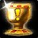

| Ajuda |
|---|
|
Bem-vindo ao Campus Party Online! Para melhorar sua experiência na Campus, criamos este game que cuidará de toda sua interação nos diversos eventos da Campus Party, enviando notificações, sugerindo atividades e recompensando quando alguma atividade ou interação é completada! Ele funciona como um RPG, ou seja, você evolui quanto mais você explora! Mais atividades são recompensadas como mais pontos de XP e com mais XP você sobe de nível! As missões incompletas estão na tela principal. Não esqueça de adicionar seus amigos para compartilhar suas experiências, e verifique nossas sugestões de amizade baseadas no perfil criado no cadastro! Se precisar de alguma ajuda mais, fique livre para escolher os seguintes sub-menus. Se o que você precisa não se encaixar na ajuda a seguir, procure um de nossos colaboradores espalhados pelo evento. |
|
Em cada um dos crachás entregues para os participantes existe um chip chamado RFID único. Espalhado por toda a Campus, principalmente nos salões de eventos e stands, estão localizados sensores que leem esses RFID e sabem onde e o que você está fazendo baseado na programação da Campus. Todas essas informações são enviadas pro banco de dados da Campus, que distribui os pontos de experiência e itens ganhos ao completar as missões. É por isso que você pode participar do Campus Party Online mesmo sem ter um smartphone! Através dos totens espalhados por todo o evento, você pode checar todas as suas conquistas realizadas. |
|---|
| Este é o menu do seu avatar. Nele você pode checar seu nível, suas informações, interesses e habilidades, além de editar suas preferências de missões e eventos. | |||
|---|---|---|---|
| Este é o seu inventário. É pra lá que vão os itens que você ganha ao participar de eventos e missões. | |||
| Mapa completo da Campus Party, com função de rotas e com informações precisas e bem detalhadas de todo o espaço do evento. | |||
|  | Tela principal do Campus Party Online! Aqui você verá as notificações de eventos próximos e uma lista com suas missões registradas! Além disso, tem uma visualização rápida da sua barra de experiência e nível. | ||
| Lista de amigos e a funcionalidade de criar e procurar grupos de pessoas que estejam a fim de participar dos mesmos eventos que você, ou apenas sentar e conversar sobre o último episódio daquela série legal. | |||
| Mude as configurações do Campus Party Online, como sons e notificações push. | |||